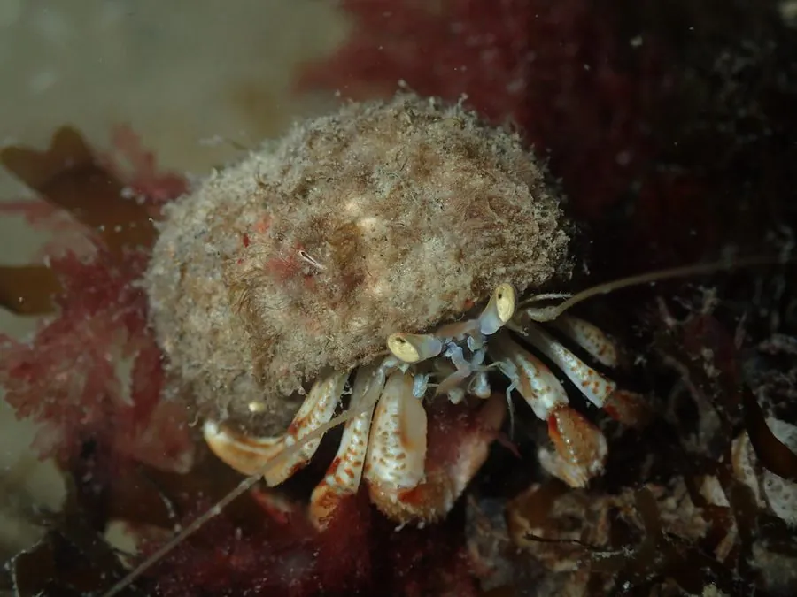

甲壳动物 · 动物界
布氏寄居蟹 Pagurus bernhardus

背着空螺壳行走的常见寄居蟹，腹部柔软而不对称，需要不断更换更大的螺壳来保护自己，还常与海葵共生。
- 分类
- 门节肢动物门纲软甲纲目十足目科寄居蟹科属寄居蟹属
- 栖息环境
- 潮间带至浅海的沙泥底与岩礁，常背着螺壳活动
- 地理分布
- 东北大西洋沿岸，从挪威、冰岛到葡萄牙
- 保护级别
- 暂无评估
物种志
布氏寄居蟹体长约 2–4 cm，头胸甲坚硬，第一对螯足左右大小不等，右螯通常更大；腹部柔软、呈螺旋状，末端有尾肢钩住螺壳内壁。体色红褐至橙褐色，螯足表面有颗粒。
它栖息在潮间带到浅海的沙泥底和岩礁间，杂食，取食腐肉、藻类和小型无脊椎动物。随着身体长大，它必须更换更大的空螺壳，壳源紧张时会与同类争夺，甚至排队等待对方换壳。布氏寄居蟹常与海葵共生，把海葵背在壳上，海葵的刺细胞帮助御敌，也能获得寄居蟹进食时的残屑。雌蟹把卵抱在腹部，幼体浮游发育，之后寻找小螺壳定居。它分布于东北大西洋沿岸，从挪威、冰岛到葡萄牙都能见到。
形态与习性
- 食性杂食，吃腐肉、藻类与小型无脊椎动物
- 体长约 2–4 cm
- 外壳腹部柔软，需借空螺壳保护，随生长更换
- 共生常与海葵共生，海葵随壳移动并获残食
- 繁殖雌蟹抱卵，幼体浮游后寻找小螺壳定居
- 习性壳源紧缺时会争夺空壳，甚至排队等待更换
趣味知识
- 寄居蟹的腹部是柔软的螺旋状，必须躲进空螺壳里才能保护自己。
- 它们长大就要换更大的壳，找不到合适壳时会争夺或排队等候。
- 寄居蟹常把海葵背在壳上，海葵的刺细胞能帮它御敌。